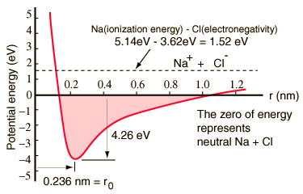

Sodium Chloride, NaClThe classic case of ionic bonding, the sodium chloride molecule forms by the ionization of sodium and chlorine atoms and the attraction of the resulting ions. An atom of sodium has one 3s electron outside a closed shell, and it takes only 5.14 electron volts of energy to remove that electron. The chlorine lacks one electron to fill a shell, and releases 3.62 eV when it acquires that electron (it's electron affinity is 3.62 eV). This means that it takes only 1.52 eV of energy to donate one of the sodium electrons to chlorine when they are far apart. When the resultant ions are brought closer together, their electric potential energy becomes more and more negative, reaching -1.52 eV at about 0.94 nm separation. This means that if neutral sodium and chlorine atoms found themselves closer than 0.94 nm, it would be energetically favorable to transfer an electron from Na to Cl and form the ionic bond. The potential energy curve shows that there is a minimum at 0.236 nm separation and then a steep rise in potential which represents a repulsive force. This repulsive force is more than just an electrostatic repulsion between the electron clouds of the two atoms. It has a quantum mechanical character rooted in the Pauli exclusion principle, and is often called just the "exclusion principle repulsion". When the ions are widely separated, the wavefunctions of their core electrons do not significantly overlap and they can have identical quantum numbers. As they get closer, the increasing overlap of the wavefunctions causes some to be forced into higher energy states. No two electrons can occupy the same state, so as a new set of energy states is formed for the composite, two-nucleus system, the lower energy states are filled and some of the electrons are pushed into higher states. This requires energy and is experienced as a repulsion, preventing the ions from coming any closer to each other. The potential diagram above is for gaseous NaCl, and the environment is different in the normal solid state where sodium chloride (common table salt) forms cubical crystals. The ion separation is 0.28 nm, somewhat larger than that in the gaseous state. A major part of the study of molecular structure is the description of the chemical bonds which are formed between atoms. The classic studies are the extremes of ionic bonding in sodium chloride and covalent bonding in the hydrogen molecule.
|
Index Reference Tipler Elem. Modern Physics, Ch 5 | |||
|
Go Back |
Molecular Spectra
|
Index Molecular spectra concepts | |||||
| HyperPhysics***** Quantum Physics | Go Back |